How is the dot product of two vectors defined and what geometric information does it tell us?
How can we tell if two vectors in \(\R^n\) are perpendicular?
How can we find how much of one vector is parallel to another?
In Section9.2, we considered vector addition and scalar multiplication algebraically and interpreted the corresponding geometric meaning. In this section, we will introduce a type of vector multiplication that will be used to measure how much two vectors move together. First, we will discuss what is meant by move together in the context of vectors in a one-dimensional space (i.e., on a number line). After that, we will generalize this idea to two dimensions in Preview Activity9.3.1.
We consider one-dimensional vectors denoted \(\vv=\langle v_1 \rangle\text{.}\) Notice that vectors in one dimension will only have one component. Graphically, these vectors will look like an arrow on the number line corresponding to the change described by the component. Remember that vectors do not have an inherent starting or ending location, so we can translate vectors without changing the magnitude or direction.
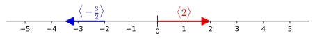
A plot of \(\langle 2\rangle\) and \(\langle -1.5 \rangle \) in red and blue, respectively
Figure9.3.1.A plot of \(\langle 2\rangle\) and \(\langle -1.5 \rangle \) in red and blue, respectively
Given two vectors, we want measure how much these vectors move together with a scalar measurement. For instance, if we let \(\vv=\langle 2\rangle\) and \(\vw=\langle -3\rangle \text{,}\) then we can graphically represent these starting from the origin as in Figure9.3.2. We want a multiplicative, scalar measure of how much \(\vv\) and \(\vw\) move together, so lets multiply their (one) components. By multiplying our components, we get \((2)(-3)=-6\text{.}\) You probably notice the negative in this measurement first, so lets start by interpreting that aspect.
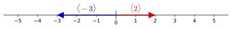
A plot of \(\langle 2\rangle\) and \(\langle -3 \rangle \) in red and blue, respectively
Figure9.3.2.A plot of \(\langle 2\rangle\) and \(\langle -3 \rangle \) in red and blue, respectively
The red and blue vectors in Figure9.3.2 move completely opposite of each other, which is why we got a negative result. Generalizing this idea for all one-dimensional vectors, we see that taking the product of the components of the vectors will give a positive result when the vectors are in the same direction and a negative result when the vectors move opposite of each other. For example, the pair of vectors \(\langle 2\rangle \) and \(\langle 3\rangle \) will move together exactly as much as \(\langle -2\rangle \) and \(\langle -3\rangle \) will together. Note that the product of components for each of these pairs is \(6\text{.}\)
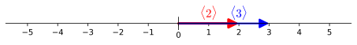
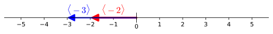
Figure9.3.3.Plots of \(\langle 2\rangle\) and \(\langle 3 \rangle \) together and \(\langle -2\rangle\) and \(\langle -3 \rangle \) together
Changing the length of the vectors in the pair you are comparing will also affect how much the vectors move together as measured by the product of the components (in one-dimension). For example, the pair of vector \(\langle 2\rangle \) and \(\langle 1\rangle \) do not move together as much as the pair of vectors \(\langle 2\rangle \) and \(\langle 3\rangle \) do. In fact, the product of the components says that the pair of vector \(\langle 2\rangle \) and \(\langle 1\rangle \) move only a third as much together as \(\langle 2\rangle \) and \(\langle 3\rangle \) do. This should make sense because there are not as long of arrows in the first figure as the second in Figure9.3.4.
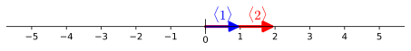
Figure9.3.4.Plots of \(\langle 1\rangle\) and \(\langle 2 \rangle \) together and \(\langle 2\rangle\) and \(\langle 3 \rangle \) together
Our one-dimensional examples above motivate why we will use the product of components to measure how much vectors move together, but we pause now to say something about what move together does not mean. Specifically, when we ask how much \(\vv\) and \(\vw\) move together, we are NOT measuring how much of \(\vv\) is in the direction of \(\vw\) or how much of \(\vw\) is in the direction of \(\vv\text{.}\) Additionally, we are NOT measuring the difference between \(\vv\) and \(\vw\text{.}\) We need a scalar result (and not a vector) to measure how much \(\vv\) and \(\vw\) move together because this measurement of together does not have an associated direction. In the following Preview Activity, we will use our measurement of moving together in one dimension, as computed by the product of the vector components, to develop a meaning for what moving together means in a two-dimensional setting.
Preview Activity9.3.1.
In this Preview Activity, we consider some examples that will help us understand what we mean by moving together for two-dimensional vectors. In particular, we will use the following:
Draw representatives of each of \(\vu_1,\vu_2,\vu_3,\vu_4\) in the plane using the axes below.
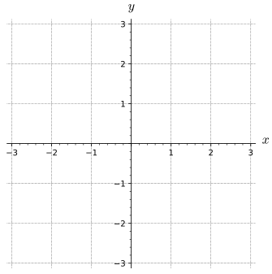
A plot of the 2D plane
Figure9.3.5.A plot of the 2D plane
(b)
(i)
Multiply the first components of \(\vu_1\) and \(\vu_2\) and use your ideas from one-dimensional vectors to explain what this value says about how much \(\vu_1\) and \(\vu_2\) move together horizontally.
(ii)
Multiply the second components of \(\vu_1\) and \(\vu_2\) and use your ideas from one-dimensional vectors to explain what this value says about how much \(\vu_1\) and \(\vu_2\) move together vertically.
(iii)
Add together the results of the previous two parts and explain how this sum relates to how much \(\vu_1\) and \(\vu_2\) move together. You should also look at a plot of \(\vu_1\) and \(\vu_2\) starting at the same point.
(c)
(i)
Multiply the horizontal and vertical components of \(\vu_1\) and \(\vu_3\) separately and use these results to write about how much \(\vu_1\) and \(\vu_3\) together horizontally and how much \(\vu_1\) and \(\vu_3\) move together vertically.
(ii)
Add together the two results of the previous task and explain how this sum relates to how much \(\vu_1\) and \(\vu_3\) move together. You should also look at a plot of \(\vu_1\) and \(\vu_3\) starting at the same point.
(d)
Multiply the horizontal and vertical components of \(\vu_1\) and \(\vu_4\) separately then add the two results. Use this number and a plot of \(\vu_1\) and \(\vu_3\) starting at the same point to explain how much \(\vu_1\) and \(\vu_4\) move together.
In Preview Activity9.3.1, you have started developing an understanding of how the sum of products of the components of vectors can be used as an indicator of how much two vectors in the plane move together. The rest of this section will formalize this idea as the dot product of two vectors and explore properties of this measurement.
Subsection9.3.1The Dot Product
We can extend the ideas of Preview Activity9.3.1 to any dimension, which gives us the definition of the dot product.
Definition9.3.6.
The dot product of vectors \(\vu=\langle u_1, u_2,\ldots,u_n \rangle\) and \(\vv=\langle v_1, v_2,\ldots,v_n \rangle\) in \(\R^n\) is the scalar
Notice that the resulting quantity is a scalar. In the next section, we will explore another product of vectors for which the resulting quantity is a vector. For this reason, you will sometimes see the phrase scalar product used in place of dot product. The introduction to this section and Preview Activity9.3.1 examined dot products of one- and two-dimensional vectors.
The dot product gives us a way to define a product of two vectors that measures how much the vectors move together. Additionally, the dot product behaves in ways that are similar to the product of real numbers.
Properties of the dot product.
Let \(\vu\text{,}\)\(\vv\text{,}\) and \(\vw\) be vectors in \(\R^n\text{.}\) Then
\(\vu \cdot \vv = \vv \cdot \vu\) (The dot product is commutative.)
\((\vu + \vv) \cdot \vw = (\vu \cdot \vw) + (\vv \cdot \vw)\) (The dot product can be distributed across vector addition.)
if \(c\) is a scalar, then \((c\vu) \cdot \vw = c(\vu \cdot \vw)\) (The dot product is associative with scalar multiplication.)
In addition to the algebraic properties listed above, the dot product gives us valuable geometric information about the vectors and their relative orientation. For instance, when we take the dot product of a vector with itself, we find
In other words, the dot product of a vector with itself gives the square of the length of the vector: \(\vu\cdot\vu=\vecmag{\vu}^2\text{.}\)
Subsection9.3.2The Angle between Vectors
As we saw in Preview Activity9.3.1, the dot product measures how much vectors move together. This measurement can also help us understand the angle between two vectors. If we are given two vectors \(\vu\) and \(\vv\text{,}\) there are two angles that these vectors create, as depicted in Figure9.3.7. We will call \(\theta\text{,}\) the smaller of these angles, the angle between these vectors. Notice that \(\theta\) lies between 0 and \(\pi\) because we would consider the angle from the other side if the angle was greater than \(\pi\text{.}\)
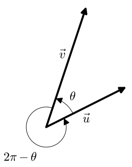
A plot of two vectors with an acute angle between them
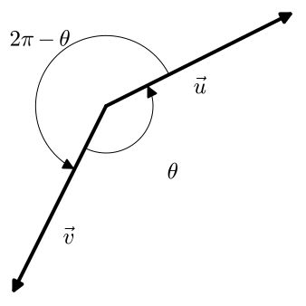
A plot of two vectors with an obtuse angle between them
Figure9.3.7.The angle between vectors for two different configurations of \(\vu\) and \(\vv\)
Key Idea9.3.8.
Given vectors \(\vu\) and \(\vv\text{,}\) the following relationship holds for \(\theta\) being the smallest angle between the vectors:
To determine this angle, we may apply the Law of Cosines to the triangle shown in Figure9.3.9.
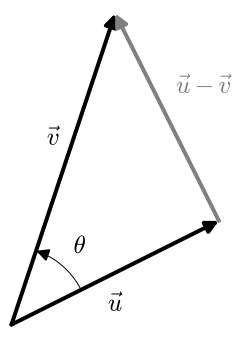
A plot of two vectors with an acute angle between them
Figure9.3.9.A triangle of vectors, \(\vu\text{,}\)\(\vv\text{,}\) and \(\vu-\vv\)
Using the fact that the dot product of a vector with itself gives us the square of its length, together with other properties of the dot product, we find:
The powerful conclusion from (9.3.1) is that the dot product is a simple algebraic calculation that provides us with important geometric information about the angle between the vectors that would be difficult to determine otherwise. This should not be that surprising because we defined the dot product to measure how much vectors moved together, thus the dot product would be related to the angle between the vector inputs. While you normally need to interpret the angle that comes out of an inverse trigonometric function, the result of (9.3.2) does not need to be interpreted because the angle measurement and the range of arccosine are both from \(0\) to \(\pi\text{.}\)
Activity9.3.3.
Determine each of the following:
(a)
The length of the vector \(\vu=\langle 1, 2, -3 \rangle\) using the dot product.
(b)
The angle between the vectors \(\vu =\langle 1, 2 \rangle\) and \(\vv = \langle 4, -1 \rangle\) to the nearest tenth of a degree.
(c)
The angle between the vectors \(\vy =\langle 1, 2, -3 \rangle\) and \(\vz = \langle -2, 1, 1 \rangle\) to the nearest tenth of a degree.
(d)
If the angle between the vectors \(\vu\) and \(\vv\) is a right angle, what does the expression \(\vu \cdot \vv = \vecmag{\vu} \vecmag{\vv} \cos(\theta)\) say about their dot product?
(e)
If the angle between the vectors \(\vu\) and \(\vv\) is acutethat is, less than \(\pi/2\)what does the expression \(\vu\cdot\vv=\vecmag{\vu}\vecmag{\vv}\cos(\theta)\) say about their dot product?
(f)
If the angle between the vectors \(\vu\) and \(\vv\) is obtusethat is, greater than \(\pi/2\)what does the expression \(\vu\cdot\vv=\vecmag{\vu}\vecmag{\vv}\cos(\theta)\) say about their dot product?
Subsection9.3.3The Dot Product and Orthogonality
Many important relationships between vectors arise when the angle between two vectors is a right angle. In this case, we say the vectors are orthogonal. For instance, orthogonality often plays a role in optimization problems: to determine the shortest path from a point in \(\R^3\) to a given plane, we move along a line orthogonal to the plane.
As Activity9.3.3 indicates, the dot product provides a simple means to determine whether two vectors are orthogonal to one another. In this case,\(\vu\cdot\vv=\vecmag{\vu}\vecmag{\vv}\cos(\pi/2) = 0\text{,}\) so we make the following important observation.
The dot product and orthogonality.
Two vectors \(\vu\) and \(\vv\) in \(\R^n\) are orthogonal to each other provided that \(\vu \cdot \vv = 0\text{.}\)
More generally, the sign of the dot product gives us useful information about the relative orientation of the vectors. If we remember that
\begin{align*}
\cos(\theta) \gt 0 \mathstrut \amp \ \ \ \text{ if } \theta \text{ is an acute angle,}\\
\cos(\theta) = 0 \mathstrut \amp \ \ \ \text{ if } \theta \text{ is a right angle, and}\\
\cos(\theta) \lt 0 \mathstrut \amp \ \ \ \text{ if } \theta \text{ is an obtuse angle,}
\end{align*}
then we see that for nonzero vectors \(\vu\) and \(\vv\text{,}\)
\begin{align*}
\vu\cdot\vv \gt 0 \mathstrut \amp \ \ \ \text{ if } \theta \text{ is an acute angle,}\\
\vu\cdot\vv = 0 \mathstrut \amp \ \ \ \text{ if }
\theta \text{ is a right angle, and}\\
\vu\cdot\vv \lt 0 \mathstrut \amp \ \ \ \text{ if }
\theta \text{ is an obtuse angle.}
\end{align*}
Earlier in this section we referred to the dot product as measuring how much two vectors move together. We should emphasize that this is a different idea than asking how much of one vector is in the direction of another, which would have a vector as an answer. The relationship between the sign of the dot product and the angle between the vectors reinforces the idea of how much two vectors move together (or apart). We would say two vectors move together a positive amount if they have an acute angle between them, meaning that the net amount of how much the components of the vectors move together/apart is positive. Vectors that do not move together at all would have a right angle between them and thus the dot product would be zero. Vectors with a negative dot product will move opposite each other more than together (as a sum of the components moving together/apart), thus they will have an obtuse angle between them.
Subsection9.3.4Work, Force, and Displacement
In physics, work is a measure of the energy required to apply a force to an object through a displacement. In Figure9.3.11, we can see a diagram showing the force applied to a refrigerator (in orange) that is used to move the refrigerator from point \(A\) to point \(B\text{.}\) The change in location, \(\overrightarrow{AB}\text{,}\) is called the displacement. Notice that not all of the force is in the direction of the displacement. The work done on the refrigerator only depends on the amount of force that is in the direction of \(\overrightarrow{AB}\text{.}\)
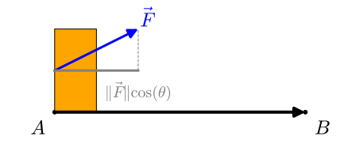
A diagram showing the force applied to the refrigerator as the refrigerator is moved from \(A\) to \(B\text{.}\) The momement is rightward and parallel to the ground, but the force is rightward and slightly upward.
Figure9.3.11.A diagram showing the force applied to the refrigerator as the refrigerator is moved from \(A\) to \(B\)
The work required to move the refrigerator is
\begin{equation*}
W = \vF\cdot\overrightarrow{AB} = \vecmag{\vF} \vecmag{\overrightarrow{AB}} \cos(\theta)\text{.}
\end{equation*}
This means that the work is determined only by the magnitude of the force applied parallel to the displacement and the length of the displacement. Consequently, if we are given two vectors \(\vu\) and \(\vv\text{,}\) we would like to write \(\vu\) as a sum of two vectors, one of which is parallel to \(\vv\) and one of which is orthogonal to \(\vv\text{.}\) We will talk about this after the following activity.
Activity9.3.4.
(a)
Determine the work done by a 25 pound force acting at a \(30^{\circ}\) angle to the direction of the objects motion, if the object is pulled 10 feet.
(b)
Determine if more work or less work is done if the angle to the direction of the objects motion is \(60^\circ\text{.}\)
Subsection9.3.5Projections
Suppose we want to split the vector \(\vu\) into parts that are parallel to \(\vv\) and orthogonal to \(\vv\text{,}\) which we will call \(\vw_1\) and \(\vw_2\) respectively. In other words, we want to write \(\vu=\vw_1+\vw_2\) where \(\vw_1=k \vv\) and \(\vw_2 \cdot \vv =0\text{.}\) Geometrically, this will look like one of the possibilities shown in Figure9.3.12.
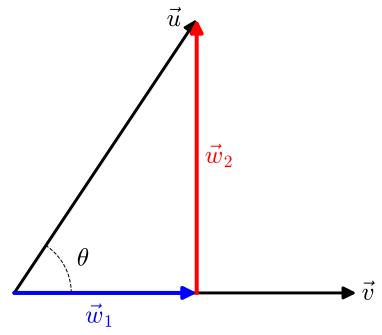
Vector \(\vv\) points horizontally with \(\vu\) above it making an acute angle \(\theta\text{.}\) The vector \(\vw_2\) is orthogonal to \(\vv\text{,}\) pointing upward so that the tip of \(\vw_2\) coincides with the tip of \(\vu\text{.}\) Vector \(\vw_1\) has the same tail as \(\vv\) and its tip coincides with the tail of \(\vw_2\text{.}\)
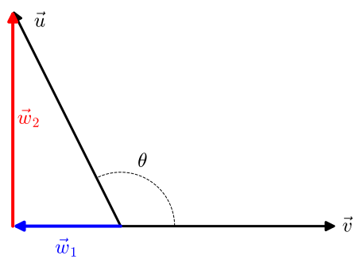
Vector \(\vv\) points horizontally with \(\vu\) above it making an obtuse angle \(\theta\text{.}\) The vector \(\vw_2\) is orthogonal to the horizontal axis, which passes through \(\vv\text{,}\) and \(\vw_2\) points upward so that the tip of \(\vw_2\) coincides with the tip of \(\vu\text{.}\) Vector \(\vw_1\) has the same tail as \(\vv\) and its tip coincides with the tail of \(\vw_2\text{.}\)
Figure9.3.12.Different possibilities for spliting \(\vu\) into parts that are parallel and orthogonal to \(\vv\)
Notice that if the angle between \(\vu\) and \(\vv\) is obtuse, then the amount of \(\vu\) that is parallel to \(\vv\) will be in the direction opposite \(\vv\text{.}\) Before we look at how to calculate the vectors \(\vw_1\) and \(\vw_2\text{,}\) we will do an activity about drawing the graphical representation of this splitting of \(\vu\) into parts that are parallel to \(\vv\) and orthogonal to \(\vv\)
Activity9.3.5.
In this activity, we will be focused on drawing the graphical representation of this splitting of \(\vu\) into two parts. One will be \(\vw_1\text{,}\) which we will make parallel to \(\vv\text{.}\) The other will be \(\vw_2\text{,}\) which we will make orthogonal to \(\vv\text{.}\)
(a)
For the configuration of vectors shown in Figure9.3.13, draw and label \(\vw_1\) and \(\vw_2\text{.}\)
A plot of \(\vu\text{,}\)\(\vv\)
Figure9.3.13.A plot of \(\vu\) and \(\vv\)
(b)
For the configuration of vectors shown in Figure9.3.14, draw and label \(\vw_1\) and \(\vw_2\text{.}\)
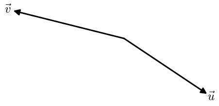
A plot of \(\vu\text{,}\)\(\vv\)
Figure9.3.14.A plot of \(\vu\) and \(\vv\)
(c)
Now we want to switch the roles of \(\vu\) and \(\vv\) for the examples in the previous parts. Specifically, for these configuration of vectors, we want to split \(\vv\) into parts that are parallel to \(\vu\text{,}\) which we will call \(\vz_1\text{,}\) and orthogonal to \(\vu\text{,}\) which we will call \(\vz_2\text{.}\) On Figure9.3.15, draw \(\vz_1\) and \(\vz_2\text{.}\)
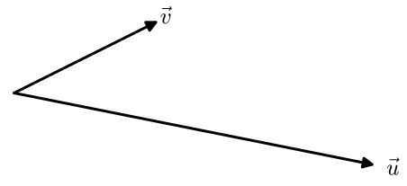
A plot of \(\vu\text{,}\)\(\vv\)
Figure9.3.15.A plot of \(\vu\) and \(\vv\)
(d)
For the configuration of vectors shown in Figure9.3.16, draw and label \(\vz_1\) and \(\vz_2\text{.}\)
A plot of \(\vu\text{,}\)\(\vv\)
Figure9.3.16.A plot of \(\vu\) and \(\vv\)
(e)
For the configuration of vectors shown in Figure9.3.17, draw and label \(\vw_1\) and \(\vw_2\text{.}\)
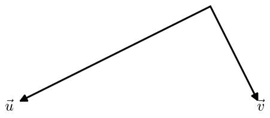
A plot of \(\vu\text{,}\)\(\vv\)
Figure9.3.17.A plot of \(\vu\) and \(\vv\)
(f)
For the configuration of vectors shown in Figure9.3.18, draw and label \(\vz_1\) and \(\vz_2\text{.}\)
A plot of \(\vu\text{,}\)\(\vv\)
Figure9.3.18.A plot of \(\vu\) and \(\vv\)
We want to compute \(\vw_1\) and \(\vw_2\) in terms of \(\vu\) and \(\vv\text{.}\) To do this, we can consider the sum \(\vu=\vw_1+\vw_2\) and take the dot product of each side with \(\vv\)
Notice that because \(\vw_2\) must be orthogonal to \(\vv\text{,}\) the second term will contribute nothing to the dot product \(\vu \cdot \vv \text{.}\) Because \(\vw_1\) is parallel to \(\vv\text{,}\) we have \(\vw_1 = k \vv\text{.}\) Since \(\vu \cdot \vv = (k \vv) \cdot \vv\text{,}\) we can solve for \(k=\frac{\vu \cdot \vv}{\vv \cdot \vv}\text{.}\) In particular, this means that we can calculate \(\vw_1 = \frac{\vu \cdot \vv}{\vv \cdot \vv} \vv\text{.}\)
Vector subtraction will also give us a way to solve for the piece of \(\vu\) that is orthogonal to \(\vv\text{.}\) We find \(\vw_2=\vu-\vw_1= \vu-\frac{\vu \cdot \vv}{\vv \cdot \vv} \vv\text{.}\) Using the property that the dot prodcut of a vector with itself is the square of the vectors magnitude, we can write \(\vw_1 = \left(\frac{\vu \cdot \vv}{\vecmag{\vv}}\right) \frac{\vv}{\vecmag{\vv}}\text{.}\)
Definition9.3.19.
Let \(\vu\) and \(\vv\) be vectors in \(\R^n\text{.}\) The component of \(\vu\) in the direction of \(\vv\) is the scalar
The component of \(\vu\) in the direction of \(\vv\) will be a scalar measure of how much of \(\vu\) is parallel to \(\vv\text{.}\) In fact, this shows up in the second formula for \(\proj_{\vv} \vu\text{.}\) Specifically, we can write \(\proj_{\vv} \vu = (\comp_{\vv} \vu) \frac{\vv}{\vecmag{\vv}}\text{,}\) which separates the projection of \(\vu\) onto \(\vv\) into how much of \(\vu\) is parallel to \(\vv\) (a scalar) times the unit vector in the direction of \(\vv\text{.}\) This is useful idea of separating the magnitude of a vector and the direction of a vector (as described by a unit vector) will be used in the analysis of many vector calculations. The first expression for \(\proj_{\vv} \vu = \frac{\vu \cdot \vv}{\vv\cdot\vv} \vv\) can be interpreted conceptually as saying the projection of \(\vu\) onto \(\vv\) must be parallel to \(\vv\) and \(\frac{\vu \cdot \vv}{\vv\cdot\vv}\) is the length of \(\proj_{\vv} \vu\) as a proportion of \(\vv\text{.}\)
Example9.3.20.
In this example we will look at calculating and making sense of the different parts of the projection of \(\langle 4,3\rangle \) onto \(\langle 0,2 \rangle\text{.}\) For notational purposes, we will let \(\vu = \langle 4,3\rangle \) and \(\vv = \langle 0,2 \rangle\text{.}\) Applying Definition9.3.19, we find
Note that the scalar \((3)\) in the last equation is \(\comp_\vv \vu\) and the vector \(\langle 0,1\rangle\) is the unit vector in the direction of \(\vv\text{.}\)
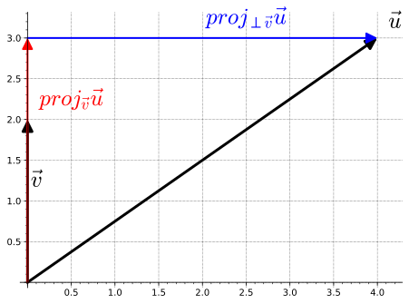
A plot of \(\vu\text{,}\)\(\vv\text{,}\)\(\proj_\vv \vu\text{,}\) and \(\proj_{\perp \vv} \vu\)
Figure9.3.21.A plot of \(\vu\text{,}\)\(\vv\text{,}\)\(\proj_\vv \va\text{,}\) and \(\proj_{\perp \vv} \vu\)
We can now compute the orthogonal projection of \(\vu\) onto \(\vv\) using \(\proj_\vv \vu\text{.}\)
The projection of \(\vu\) onto \(\vv\) is asking how much of \(\langle 4,3 \rangle\) is in the vertical direction.
The projection of \(\vu\) onto \(\vv\) can be split into the scalar \(3\text{,}\) the component of \(\vu\) in the direction of \(\vv\text{,}\) and the unit vector in the direction of \(\vv\text{,}\)\(\langle 0,1 \rangle \text{.}\)
The orthogonal projection of \(\vu\) onto \(\vv\) will be given by how much of \(\vu\) is horizontal because we subtract out all of the vertical component of \(\vu\text{.}\)
The following activity gives you an opportunity to practice the computations involved with finding parallel and orthogonal projections.
Activity9.3.6.
Let \(\vu = \langle 2, 6 \rangle\text{.}\)
(a)
Let \(\vv = \langle 4, -8 \rangle\text{.}\) Find \(\comp_{\vv} \vu\text{,}\)\(\proj_{\vv} \vu\text{,}\) and \(\proj_{\perp \vv} \vu\text{.}\) Draw a picture to illustrate the vectors involved. Finally, express \(\vu\) as the sum of two vectors where one is parallel to \(\vv\) and the other is perpendicular to \(\vv\text{.}\)
(b)
Now let \(\vv = \langle -2,4 \rangle \text{.}\) Without doing any calculations, find \(\proj_{\vv} \vu\text{.}\) Explain your reasoning.
Hint.
Refer to the picture you drew in the previous part
(c)
Find a vector \(\vw\) not parallel to \(\vz = \langle 3,4 \rangle \) such that \(\proj_{\vz} \vw\) has length \(10\text{.}\) Note that there are infinitely many different answers!
It is important to note that in general \(\proj_{\vv} \vw \neq \proj_{\vw} \vv\text{.}\) You can explore in Exercise9.3.6.12 how switching the vectors in the projection formula will give a different results.
Summary
The dot product of two vectors in \(\R^n\text{,}\)\(\vu = \langle u_1,
u_2, \ldots, u_n \rangle\) and \(\vv = \langle v_1, v_2, \ldots, v_n
\rangle\text{,}\) is the scalar
where \(\theta\) is the angle between \(\vu\) and \(\vv\text{.}\)
Two vectors are orthogonal if the angle between them is \(\pi/2\text{.}\) In terms of the dot product, the vectors \(\vu\) and \(\vv\) are orthogonal if and only if \(\vu \cdot \vv = 0\text{.}\)
The projection of a vector \(\vu\) in \(\R^n\) onto a vector \(\vv\) in \(\R^n\) is the vector
\(\mathbf a = \langle 1, -4, -2 \rangle\) and \(\mathbf b = \langle 3, 1, -2 \rangle\)
\(\mathbf a \cdot \mathbf b =\)
Is the angle between the vectors "acute", "obtuse" or "right"?
2.
Determine if the pairs of vectors below are "parallel", "orthogonal", or "neither".
\(\mathbf a = \langle 2, 3, 3 \rangle\) and \(\mathbf b = \langle 8, 12, -52/3 \rangle\) are
\(\mathbf a = \langle 2, 3, 3 \rangle\) and \(\mathbf b = \langle 8, 12, 12 \rangle\) are
\(\mathbf a = \langle 2, 3, 3 \rangle\) and \(\mathbf b = \langle -8, -12, -13 \rangle\) are
3.
Perform the following operations on the vectors \(\vec{u} = \left\lt 3,-1,-3\right>\text{,}\)\(\vec{v} = \left\lt -3,1,-2\right>\text{,}\) and \(\vec{w} = \left\lt 1,1,0\right>\text{.}\)
Find \({ \mathbf a \cdot \mathbf b }\) if \(\left| {\mathbf a} \right|\) = 9, \(\left| {\mathbf b} \right|\) = 1, and the angle between \({\mathbf a}\) and \({\mathbf b}\) is \(\frac{\pi}{2}\) radians.
\({ \mathbf a \cdot \mathbf b }\) =
5.
What is the angle in radians between the vectors
\({\mathbf a}\) = (10, 5, -10) and
\({\mathbf b}\) = (4, 1, -4)?
Angle: (radians)
6.
Find \({ \mathbf a \cdot \mathbf b }\) if \(\left| {\mathbf a} \right|\) = 2, \(\left| {\mathbf b} \right|\) = 4, and the angle between \({\mathbf a}\) and \({\mathbf b}\) is \(- \frac{\pi}{1}\) radians.
\({ \mathbf a \cdot \mathbf b }\) =
7.
A constant force \({\mathbf F} = -6 {\mathbf i} - 9 {\mathbf j} + 7 {\mathbf k}\) moves an object along a straight line from point \((-6, -3, 8)\) to point \((-8, -13, 18)\text{.}\)
Find the work done if the distance is measured in meters and the magnitude of the force is measured in newtons.
Work: Nm
8.
A woman exerts a horizontal force of 4 pounds on a box as she pushes it up a ramp that is 7 feet long and inclined at an angle of 30 degrees above the horizontal.
Find the work done on the box.
Work: ft-lb
9.
If Yoda says to Luke Skywalker, The Force be with you, then the dot product of the Force and Luke should be:
positive
any real number
zero
negative
10.
Find the angle between the diagonal of a cube of side length 12 and the diagonal of one of its faces. The angle should be measured in radians.
11.
Let \(\vv = \langle -2, 5 \rangle\) in \(\R^2\text{,}\) and let \(\vy = \langle 0, 3, -2 \rangle\) in \(\R^3\text{.}\)
Is \(\langle 2, -1 \rangle\) perpendicular to \(\vv\text{?}\) Why or why not?
Find a unit vector \(\vu\) in \(\R^2\) such that \(\vu\) is perpendicular to \(\vv\text{.}\) How many such vectors are there? Justify your answers.
Is \(\langle 2, -1, -2 \rangle\) perpendicular to \(\vy\text{?}\) Why or why not?
Find a unit vector \(\vw\) in \(\R^3\) such that \(\vw\) is perpendicular to \(\vy\text{.}\) How many such vectors are there?Justify your answers.
Let \(\vz = \langle 2, 1, 0 \rangle\text{.}\) Find a unit vector \(\vr\) in \(\R^3\) such that \(\vr\) is perpendicular to both \(\vy\) and \(\vz\text{.}\) How many such vectors are there? Explain your process.
12.
In this exercise, we will show that the roles of \(\vu\) and \(\vv\) are not symmetric in projection formula (Definition9.3.19). We will use the same values as Example9.3.20, namely \(\vu = \langle 4,3\rangle \) and \(\vv = \langle 0,2 \rangle\text{,}\) but we will be looking at the projection of \(\vv\) onto \(\vu\text{.}\)
(a)
Will \(proj_\vu \vv\) be parallel to \(\vu\) or \(\vv\text{?}\) Use this answer to explain how you know that the result of \(proj_\vu \vv\) must be different than \(proj_\vv \vu\) (which we calculated in Example9.3.20).
(b)
Use Definition9.3.19 to calculate \(comp_\vu \vv\text{,}\)\(proj_\vu \vv\text{,}\) and \(proj_{\perp \vu} \vv\text{.}\)
(c)
Draw a plot with \(\vu\text{,}\)\(\vv\text{,}\)\(proj_\vu \vv\text{,}\) and \(proj_{\perp \vu} \vv\text{.}\)
(d)
Write a few sentences to explain how and why your plot for the previous part is different than Figure9.3.21.
13.
Consider the triangle in \(\R^3\) given by \(P=(3, 2, -1)\text{,}\)\(Q=(1, -2, 4)\text{,}\) and \(R=(4, 4, 0)\text{.}\)
Find the measure of each of the three angles in the triangle, accurate to \(0.01\) degrees.
Choose two sides of the triangle, and call the vectors that form the sides (emanating from a common point) \(\va\) and \(\vb\text{.}\)
Compute \(\proj_{\vb} \va\text{,}\) and \(\proj_{\perp \vb} \va\text{.}\)
Explain why \(\proj_{\perp \vb} \va\) can be considered a height of triangle \(PQR\text{.}\)
Find the area of the given triangle.
14.
Let \(\vu\) and \(\vv\) be vectors in \(\R^5\) with \(\vu \cdot \vv = -1\text{,}\)\(\Vert \vu \Vert = 2\text{,}\)\(\Vert \vv \Vert = 3\text{.}\) Use the properties of the dot product to find each of the following.
\(\displaystyle \vu \cdot 2\vv\)
\(\displaystyle \vv \cdot \vv\)
\(\displaystyle (\vu + \vv) \cdot \vv\)
\(\displaystyle (2\vu+4\vv) \cdot (\vu - 7\vv)\)
\(\Vert\vu\Vert \Vert\vv\Vert \cos(\theta)\text{,}\) where \(\theta\) is the angle between \(\vu\) and \(\vv\)
\(\displaystyle \theta\)
15.
One of the properties of the dot product is that \((\vu+\vv) \cdot \vw = (\vu \cdot \vw) + (\vv \cdot \vw)\text{.}\) That is, the dot product distributes over vector addition on the right. Here we investigate whether the dot product distributes over vector addition on the left.
Let \(\vu = \langle 1,2,-1 \rangle\text{,}\)\(\vv = \langle 4,-3,6 \rangle\text{,}\) and \(\vw = \langle 4,7,2 \rangle\text{.}\) Calculate
for any vectors \(\vx\text{,}\)\(\vy\text{,}\) and \(\vz\) in \(\R^n\text{.}\)
16.
When running a sprint, the racers may be aided or slowed by the wind. The wind assistance is a measure of the wind speed that is helping push the runners down the track. It is much easier to run a very fast race if the wind is blowing hard in the direction of the race. So that world records arent dependent on the weather conditions, times are only recorded as record times if the wind aiding the runners is less than or equal to 2 meters per second. Wind speed for a race is recorded by a wind gauge that is set up close to the track. It is important to note, however, that weather is not always as cooperative as we might like. The wind does not always blow exactly in the direction of the track, so the gauge must account for the angle the wind makes with the track. Suppose a 4 mile per hour wind is blowing to aid runners by making a \(38^{\circ}\) angle with the race track. Determine if any times set during such a race would qualify as records.
17.
Molecular geometry is the geometry determined by arrangements of atoms in molecules. Molecular geometry includes measurements like bond angle, bond length, and torsional angles. These attributes influence several properties of molecules, such as reactivity, color, and polarity.
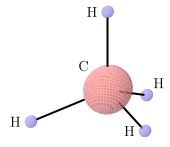Figure9.3.22.A methane molecule.
As an example of the molecular geometry of a molecule, consider the methane \(\text{CH}_4\) molecule, as illustrated in Figure9.3.22. According to the Valence Shell Electron Repulsion (VSEPR) model, atoms that surround single different atoms do so in a way that positions them as far apart as possible. This means that the hydrogen atoms in the methane molecule arrange themselves at the vertices of a regular tetrahedron. The bond angle for methane is the angle determined by two consecutive hydrogen atoms and the central carbon atom. To determine the bond angle for methane, we can place the center carbon atom at the point \(\left(\frac{1}{2}, \frac{1}{2}, \frac{1}{2} \right)\) and the hydrogen atoms at the points \((0,0,0)\text{,}\)\((1,1,0)\text{,}\)\((1,0,1)\text{,}\) and \((0,1,1)\text{.}\) Find the bond angle for methane to the nearest tenth of a degree.